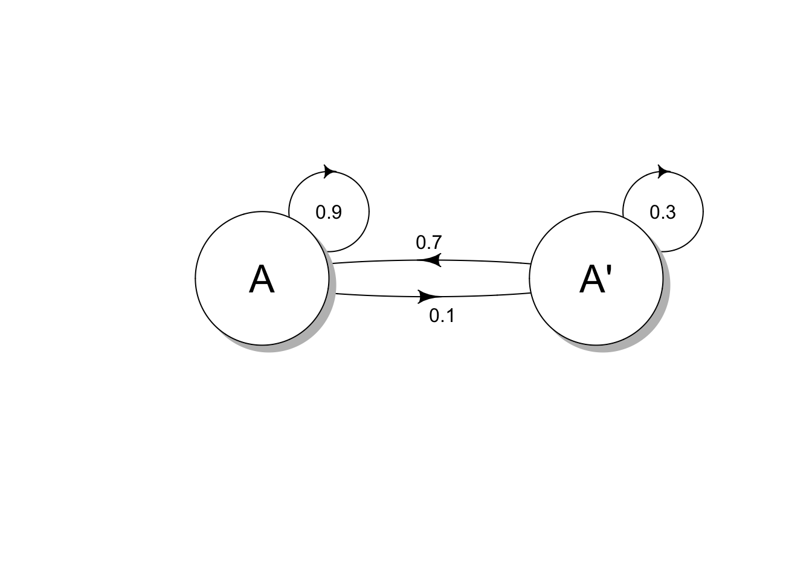
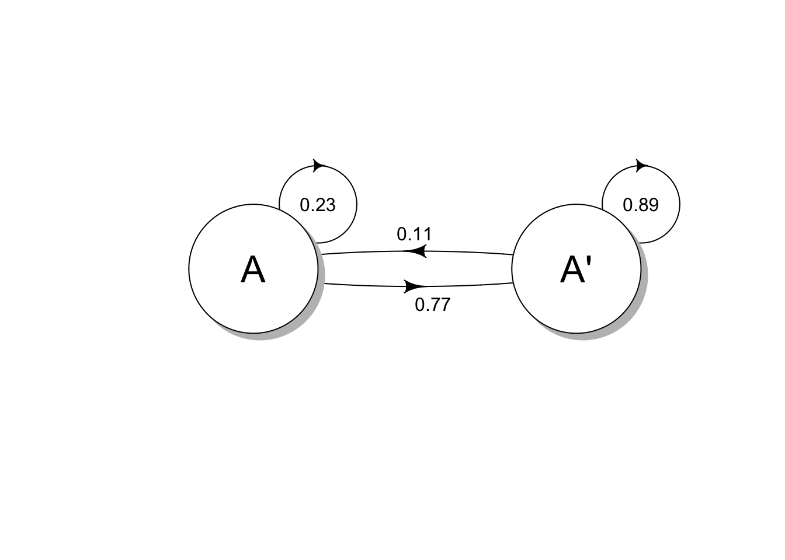

Last updated: 2020-10-18
Checks: 7 0
Knit directory: muse/
This reproducible R Markdown analysis was created with workflowr (version 1.6.2). The Checks tab describes the reproducibility checks that were applied when the results were created. The Past versions tab lists the development history.
Great! Since the R Markdown file has been committed to the Git repository, you know the exact version of the code that produced these results.
Great job! The global environment was empty. Objects defined in the global environment can affect the analysis in your R Markdown file in unknown ways. For reproduciblity it’s best to always run the code in an empty environment.
The command set.seed(20200712) was run prior to running the code in the R Markdown file. Setting a seed ensures that any results that rely on randomness, e.g. subsampling or permutations, are reproducible.
Great job! Recording the operating system, R version, and package versions is critical for reproducibility.
Nice! There were no cached chunks for this analysis, so you can be confident that you successfully produced the results during this run.
Great job! Using relative paths to the files within your workflowr project makes it easier to run your code on other machines.
Great! You are using Git for version control. Tracking code development and connecting the code version to the results is critical for reproducibility.
The results in this page were generated with repository version f79342a. See the Past versions tab to see a history of the changes made to the R Markdown and HTML files.
Note that you need to be careful to ensure that all relevant files for the analysis have been committed to Git prior to generating the results (you can use wflow_publish or wflow_git_commit). workflowr only checks the R Markdown file, but you know if there are other scripts or data files that it depends on. Below is the status of the Git repository when the results were generated:
Ignored files:
Ignored: .Rhistory
Ignored: .Rproj.user/
Ignored: analysis/.Rhistory
Untracked files:
Untracked: analysis/linear_regression.Rmd
Note that any generated files, e.g. HTML, png, CSS, etc., are not included in this status report because it is ok for generated content to have uncommitted changes.
These are the previous versions of the repository in which changes were made to the R Markdown (analysis/markov_chain.Rmd) and HTML (docs/markov_chain.html) files. If you’ve configured a remote Git repository (see ?wflow_git_remote), click on the hyperlinks in the table below to view the files as they were in that past version.
| File | Version | Author | Date | Message |
|---|---|---|---|---|
| Rmd | f79342a | davetang | 2020-10-18 | Markov chain post |
A Markov chain is a mathematical system that undergoes transitions from one state to another on a state space in a stochastic (random) manner. Examples of Markov chains include the board game snakes and ladders, where each state represents the position of a player on the board and a player moves between states (different positions on the board) by rolling a dice. An important property of Markov chains, called the Markov property, is the memoryless property of the stochastic process. Basically what this means is that the transition between states depends only on the current state and not on the states preceding the current state; in terms of the board game, your next position on the board depends only on where you are currently positioned and not on the sequence of moves that got you there. Another way of thinking about it is that the future is independent of the past, given the present.
To illustrate some applications of Markov chains, I will follow the examples from this series of videos explaining Markov chains.
A company selling orange juice (call it brand A) has 20% of the market share and wishes to increase their market share via a marketing campaign. They estimated that the marketing campaign has the effect that:
In this particular example, we have two states: 1) someone using brand A (state A) and 2) someone not using brand A (state A’). We can represent this as a transition diagram (using the diagram package in R); the transition diagram shows the states and the probabilities of switching states.
P <- matrix(c(0.9, 0.7, 0.1, 0.3), byrow=T, nrow=2)
plotmat(P, # transition matrix
name = c('A', "A'"), # names of the states
pos = c(2), # position of the states
box.lwd=1, # outline of state
cex.txt=1, # size of probabilities
box.prop=1, # size of box
box.type = 'circle',
self.cex = 0.6, # size of self probability
lwd = 1, # outline of probabilities
box.cex=2 # size of text in box
)
The transition diagram can also be represented as a transition probability matrix (P):
| A | A’ | |
| A | 0.9 | 0.1 |
| A’ | 0.7 | 0.3 |
The initial state distribution matrix called \(S_{0}\), is the market share of brand A prior the marketing campaign. Since brand A had a 20% market share, 80% of the market share does not belong to brand A:
| A | A’ |
| 0.2 | 0.8 |
After the first marketing campaign, the company will be at the first state matrix, \(S_{1}\). The first state matrix can be calculated by multiplying the initial state distribution matrix, \(S_{0}\) to the transition probability matrix P:
\[ S_{1} = \begin{bmatrix} 0.2 & 0.8 \end{bmatrix} \cdot \begin{bmatrix} 0.9 & 0.1 \\ 0.7 & 0.3 \end{bmatrix} \]
To perform matrix multiplications in R use the syntax %*%:
# transition matrix P
P <- matrix(c(0.9, 0.1, 0.7, 0.3), byrow=T, nrow=2)
P [,1] [,2]
[1,] 0.9 0.1
[2,] 0.7 0.3# initial state matrix
state_0 <- matrix(c(0.2, 0.8), nrow=1)
state_0 [,1] [,2]
[1,] 0.2 0.8# initial state multiplied by transition matrix
state_0 %*% P [,1] [,2]
[1,] 0.74 0.26After the first marketing campaign, the market share of brand A is now 74% (first state). What happens if we have another round of marketing (second state) and another and so on?
# transition matrix P
P <- matrix(c(0.9, 0.1, 0.7, 0.3), byrow=T, nrow=2)
# different states
state_0 <- matrix(c(0.2, 0.8), nrow=1)
state_1 <- state_0 %*% P
state_2 <- state_1 %*% P
state_3 <- state_2 %*% P
state_4 <- state_3 %*% P
state_5 <- state_4 %*% P
state_6 <- state_5 %*% P
# bind the states
states <- rbind(state_0, state_1, state_2, state_3, state_4, state_5, state_6)
states [,1] [,2]
[1,] 0.2000000 0.8000000
[2,] 0.7400000 0.2600000
[3,] 0.8480000 0.1520000
[4,] 0.8696000 0.1304000
[5,] 0.8739200 0.1260800
[6,] 0.8747840 0.1252160
[7,] 0.8749568 0.1250432The market share of brand A is starting to plateau around 87.5%, i.e., it is approaching its steady state.
The steady state represents the state at which the system is at an equilibrium; for our previous example, this means that the market share remains the same despite the marketing campaign:
\[ S \cdot P = S \]
Given a transition probability matrix, one can find the steady state by solving the equation. Using the marketing campaign example above:
\[ S \cdot \begin{bmatrix} 0.9 & 0.1 \\ 0.7 & 0.3 \end{bmatrix} = S \]
For two states:
\[ \begin{bmatrix} a & b \end{bmatrix} \cdot \begin{bmatrix} 0.9 & 0.1 \\ 0.7 & 0.3 \end{bmatrix} = \begin{bmatrix} a & b \end{bmatrix} \]
From the matrix multiplications we can come up with a system of equations:
\[ 0.9a + 0.7b = a \]
\[ 0.1a + 0.3b = b \]
Since the two states represent the market share of brand A and not brand A, they should sum to 1:
\[ a + b = 1 \]
\[ a = 1 - b \]
We can solve for b by substituting a into \(0.9a + 0.7b = a\):
\[ 0.9(1 - b) + 0.7b = 1 - b \]
\[ 0.9 - 0.9b + 0.7b = 1 - b \]
\[ b - 0.9b + 0.7b = 1 - 0.9 \]
\[ 0.8b = 0.1 \]
\[ b = 0.125 \]
\[ a + 0.125 = 1 \]
\[ a = 0.875 \]
Substitute a back:
\[ 0.875 + b = 1 \]
\[ b = 0.125 \]
As we approximated before, the steady state of the transition matrix P is:
\[ \begin{bmatrix} 0.875 & 0.125 \end{bmatrix} \]
Does every Markov chain have a unique stationary (steady) matrix?
If a Markov chain has an unique stationary matrix, will the successive state matrices always approach this stationary matrix?
The answer to both questions is NO except for regular Markov chains. A Markov chain is regular if its transition matrix is regular. A transition matrix, P, is regular if some power of P has only positive entries. And in case you were wondering, a positive number is a number that is greater than zero and thus zero is NOT a positive number.
Below is a regular transition matrix, because all the values are positive (the first power of P):
\[ P = \begin{bmatrix} 0.3 & 0.7 \\ 0.1 & 0.9 \end{bmatrix} \]
Is the transition matrix below regular?
\[ P = \begin{bmatrix} 0 & 1 \\ 1 & 0 \end{bmatrix} \]
Let’s take some powers of it:
\[ P^{2} = \begin{bmatrix} 0 & 1 \\ 1 & 0 \end{bmatrix} \cdot \begin{bmatrix} 0 & 1 \\ 1 & 0 \end{bmatrix} = \begin{bmatrix} 1 & 0 \\ 0 & 1 \end{bmatrix} \]
\[ P^{3} = P^{2} \cdot P = \begin{bmatrix} 1 & 0 \\ 0 & 1 \end{bmatrix} \cdot \begin{bmatrix} 0 & 1 \\ 1 & 0 \end{bmatrix} = \begin{bmatrix} 0 & 1 \\ 1 & 0 \end{bmatrix} \]
\[ P^{4} = P^{2} \cdot P^{2} = \begin{bmatrix} 1 & 0 \\ 0 & 1 \end{bmatrix} \cdot \begin{bmatrix} 1 & 0 \\ 0 & 1 \end{bmatrix} = \begin{bmatrix} 1 & 0 \\ 0 & 1 \end{bmatrix} \]
\[ P^{5} = P^{3} \cdot P^{2} = \begin{bmatrix} 0 & 1 \\ 1 & 0 \end{bmatrix} \cdot \begin{bmatrix} 1 & 0 \\ 0 & 1 \end{bmatrix} = \begin{bmatrix} 0 & 1 \\ 1 & 0 \end{bmatrix} \]
The transition matrix above alternates between two matrices, which both do not contain only positive entries, thus it is not a regular transition matrix.
Sometimes we need to calculate the second power of a matrix to reveal that it is a regular transition matrix:
\[ P = \begin{bmatrix} 0.2 & 0.8 \\ 1 & 0 \end{bmatrix} \]
\[ P^{2} = \begin{bmatrix} 0.2 & 0.8 \\ 1 & 0 \end{bmatrix} \cdot \begin{bmatrix} 0.2 & 0.8 \\ 1 & 0 \end{bmatrix} = \begin{bmatrix} 0.84 & 0.16 \\ 0.2 & 0.8 \end{bmatrix} \]
If the transition matrix is regular, given any initial-state matrix \(S_{0}\), the state matrices \(S_{k}\) will approach the stationary matrix S.
Using one of the examples from this lecture: Imagine that 23% of drivers involved in an accident are also involved in an accident in the following year. 11% of drivers not involved in an accident are involved in an accident the following year. So if we had state A as accident and A’ as no accident:
P <- matrix(c(0.23, 0.11, 0.77, 0.89), byrow=T, nrow=2)
plotmat(P, #transition matrix
name = c('A', "A'"), # names of the states
pos = c(2), # position of the states
box.lwd=1, # outline of state
cex.txt=1, # size of probabilities
box.prop=1, # size of box
box.type = 'circle',
self.cex = 0.6, # size of self probability
lwd = 1, # outline of probabilities
box.cex=2 # size of text in box
)
Now if 5% of all drivers had an accident one year, what is the probability that a driver, picked at random, has an accident in the following year?
Our initial state, \(S_{0} = \begin{bmatrix} 0.05 & 0.95 \end{bmatrix}\) and our transition matrix, P:
\[ P = \begin{bmatrix} 0.23 & 0.77 \\ 0.11 & 0.89 \end{bmatrix} \]
So therefore:
\[ \begin{bmatrix} 0.05 & 0.95 \end{bmatrix} \cdot \begin{bmatrix} 0.23 & 0.77 \\ 0.11 & 0.89 \end{bmatrix} = \begin{bmatrix} 0.116 & 0.884 \end{bmatrix} \]
The probability of an accident in the following year is 11.6%. What about the long run behaviour? What percentage of drivers will have an accident in a given year?
Since our transition matrix has all positive values, this is a regular Markov chain and we can solve the equation:
\[ S \cdot P = S \]
\[ \begin{bmatrix} A & A' \end{bmatrix} \cdot \begin{bmatrix} 0.23 & 0.77 \\ 0.11 & 0.89 \end{bmatrix} = \begin{bmatrix} A & A' \end{bmatrix} \]
Solve these system of equations:
\[ 0.23A + 0.11A' = A \]
\[ A' = 1 - A \]
Substitute:
\[ 0.23A + 0.11(1 - A) = A \]
\[ 0.23A + 0.11 - 0.11A = A \]
\[ 0.11 = 0.88A \]
\[ A = 0.125 \]
\[ A' = 0.875 \]
So in the long run, 12.5% of the drivers will have an accident.
This post is a lead up to hidden Markov models (HMMs), which I am currently reading about in the book Biological Sequence Analysis: Probabilistic Models of Proteins and Nucleic Acids and learning about from material I can find online.
sessionInfo()R version 4.0.2 (2020-06-22)
Platform: x86_64-apple-darwin17.0 (64-bit)
Running under: macOS Catalina 10.15.7
Matrix products: default
BLAS: /Library/Frameworks/R.framework/Versions/4.0/Resources/lib/libRblas.dylib
LAPACK: /Library/Frameworks/R.framework/Versions/4.0/Resources/lib/libRlapack.dylib
locale:
[1] en_AU.UTF-8/en_AU.UTF-8/en_AU.UTF-8/C/en_AU.UTF-8/en_AU.UTF-8
attached base packages:
[1] stats graphics grDevices utils datasets methods base
other attached packages:
[1] diagram_1.6.5 shape_1.4.5 workflowr_1.6.2
loaded via a namespace (and not attached):
[1] Rcpp_1.0.5 rstudioapi_0.11 whisker_0.4 knitr_1.29
[5] magrittr_1.5 R6_2.4.1 rlang_0.4.7 stringr_1.4.0
[9] tools_4.0.2 xfun_0.16 git2r_0.27.1 htmltools_0.5.0
[13] ellipsis_0.3.1 rprojroot_1.3-2 yaml_2.2.1 digest_0.6.25
[17] tibble_3.0.3 lifecycle_0.2.0 crayon_1.3.4 later_1.1.0.1
[21] vctrs_0.3.4 promises_1.1.1 fs_1.5.0 glue_1.4.2
[25] evaluate_0.14 rmarkdown_2.3 stringi_1.4.6 compiler_4.0.2
[29] pillar_1.4.6 backports_1.1.9 httpuv_1.5.4 pkgconfig_2.0.3